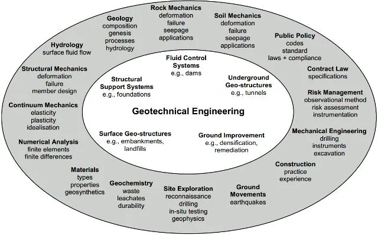
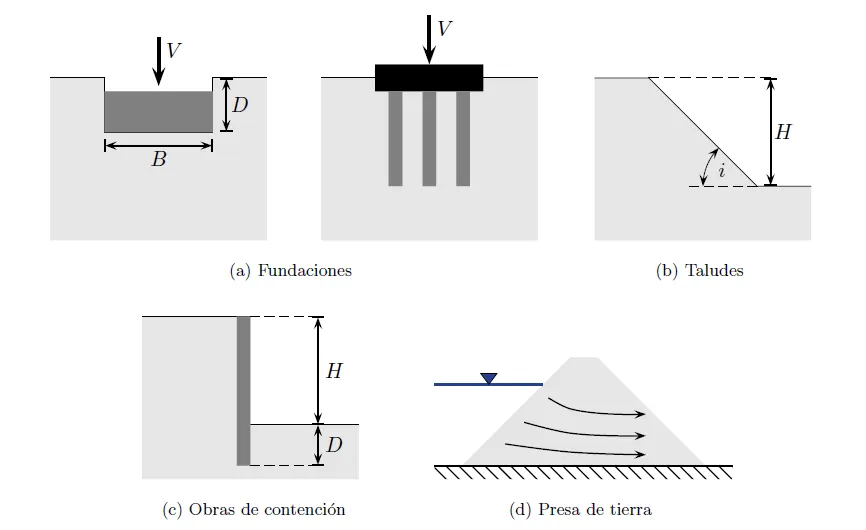
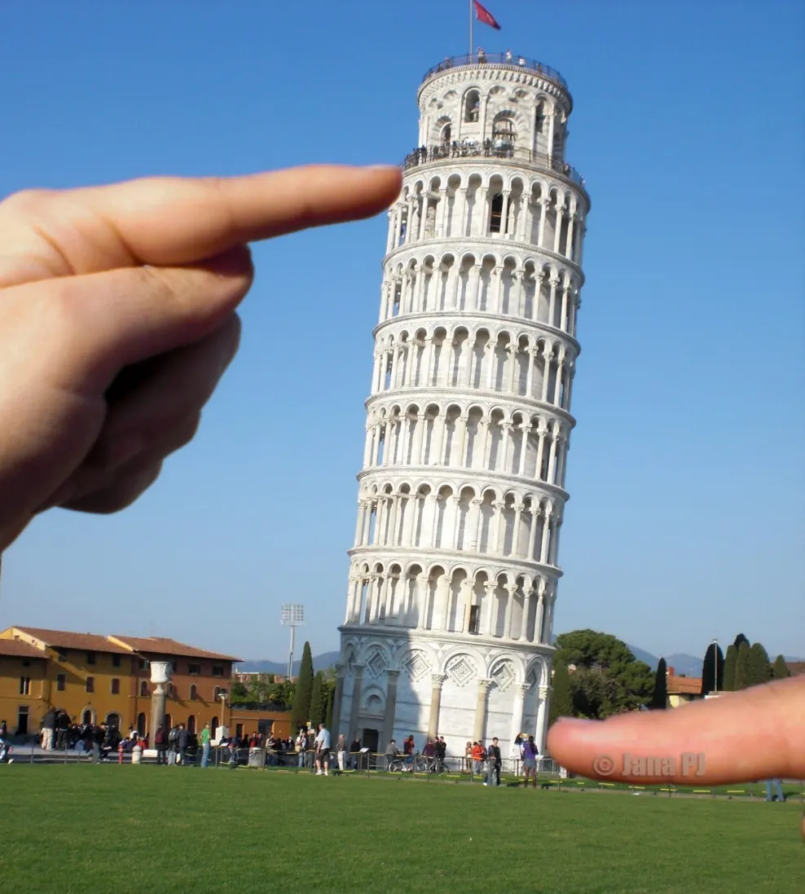

Introducción a la geotecnia#
Importante
Objetivos de aprendizaje
Definir la geotecnia, la mecánica de suelos y la mecánica de rocas, y reconocer sus diferencias con la geología aplicada.
Reconocer las obras típicas en las que interviene la geotecnia.
Ubicar los aportes históricos que dieron origen a los conceptos que se estudian en el curso.
Comprender el papel del geólogo en el estudio geotécnico y el marco normativo colombiano (NSR-10, Título H).
Definiciones#
El término geotecnia se usa con sentidos distintos según la disciplina de quien lo emplea. Para la geología aplicada, la geotecnia es la parte que estudia la composición y las propiedades de la zona más superficial de la corteza terrestre, como soporte de construcciones y obras públicas. Para la ingeniería civil, la ingeniería geotécnica es la rama que se ocupa de las propiedades mecánicas, hidráulicas e ingenieriles de los materiales terrestres y de su aplicación al diseño de cimentaciones, taludes, túneles, presas y carreteras. La Sociedad Internacional de Mecánica de Suelos e Ingeniería Geotécnica (ISSMGE) propone una definición más amplia: la ciencia que explica la mecánica de suelos y rocas y sus aplicaciones en el desarrollo humano, lo que incluye el análisis, diseño y construcción de fundaciones, taludes, estructuras de contención, diques, carreteras, túneles, rellenos sanitarios y cualquier sistema que se construya sobre o dentro del suelo o la roca.
Karl Terzaghi, considerado el fundador de la disciplina, definió la mecánica de suelos como la aplicación de las leyes de la mecánica y la hidráulica a los problemas de ingeniería relacionados con los sedimentos y otras acumulaciones no consolidadas de partículas sólidas, producidas por la desintegración mecánica y química de las rocas. La definición es interesante para un geólogo porque nombra el origen del material: el suelo de la mecánica de suelos es un producto de la meteorización y del transporte, es decir, un objeto geológico.
La geotecnia se apoya en tres pilares que conviene distinguir desde el principio. La mecánica de suelos estudia materiales particulados, porosos y generalmente saturados o parcialmente saturados, cuyo comportamiento depende del esqueleto de granos y del fluido en los poros. La mecánica de rocas estudia la roca intacta y, sobre todo, el macizo rocoso, un medio discontinuo cuyo comportamiento está gobernado por las discontinuidades. La geología de ingeniería aporta el modelo del terreno: la distribución espacial de los materiales, su origen, su estructura, el agua subterránea y los procesos activos. Sin este último pilar los dos primeros carecen de contexto.
Una frase anónima muy citada en la profesión resume con ironía el estado del arte: la ingeniería geotécnica es el arte de moldear materiales que no entendemos del todo, en formas que no podemos analizar con precisión, para resistir fuerzas que no podemos evaluar realmente, de manera que el público no tenga razones para sospechar el alcance de nuestra ignorancia. Más allá del humor, la frase reconoce que la incertidumbre es inherente a los materiales naturales. Buena parte de esa incertidumbre es geológica, y el geólogo es quien mejor puede reducirla.


Figura 1 Disciplinas que confluyen en la ingeniería geotécnica. Fuente: Way (1973).#
Obras típicas#
La geotecnia interviene en prácticamente toda obra de infraestructura. En las cimentaciones de edificios, puentes y torres se debe garantizar que el terreno soporte las cargas sin fallar por corte y sin asentamientos excesivos. En taludes y laderas, naturales o construidos en cortes de vías y excavaciones, se evalúa la estabilidad y se diseñan obras de estabilización. Las estructuras de contención (muros, tablestacas, pantallas y anclajes) resisten el empuje lateral del terreno. En presas y diques se combinan los problemas de flujo, filtración, estabilidad y asentamiento. Los túneles y excavaciones subterráneas dependen de la calidad del macizo rocoso y de su sistema de soporte. Los terraplenes, pavimentos y rellenos requieren materiales compactados con propiedades controladas. Finalmente, la gestión del riesgo por movimientos en masa, subsidencia, licuación o suelos expansivos es un campo en el que la geotecnia y la geología trabajan inseparablemente.


Figura 2 Obras típicas en geotecnia.#
Breve historia#
La construcción sobre el terreno es tan antigua como la civilización. Las pirámides de Egipto (2700 a 2500 a. C.) y las obras romanas muestran un conocimiento empírico notable sobre cimentaciones y materiales. La torre de Pisa, construida entre 1173 y 1360 sobre arcillas blandas compresibles, es el ejemplo más conocido de un asentamiento diferencial: un problema de consolidación que comenzó durante la construcción y que solo se controló a finales del siglo XX con técnicas de subexcavación.


Figura 3 Torre de Pisa (1173 a 1360), ejemplo clásico de asentamiento diferencial sobre arcillas compresibles.#
Los fundamentos teóricos aparecieron en el periodo clásico (1700 a 1900). Charles Augustin de Coulomb (1776) propuso que la resistencia al corte de un suelo es la suma de una componente de cohesión y otra de fricción proporcional a la presión normal, y desarrolló la teoría de presión de tierras basada en el equilibrio de una cuña. Henry Darcy (1856) estableció experimentalmente la ley que rige el flujo de agua a través de medios porosos. William Rankine (1857) formuló la teoría de empujes basada en el equilibrio plástico de una masa semi-infinita. Christian Otto Mohr (1882) propuso el método gráfico para representar el estado de esfuerzos en un punto, que combinado con el criterio de Coulomb dio lugar al criterio de falla de Mohr-Coulomb. Joseph Boussinesq (1885) resolvió la distribución de esfuerzos bajo una carga puntual en un semiespacio elástico, homogéneo e isotrópico. Albert Atterberg (1911) definió la fracción arcilla como las partículas menores de 2 µm y estableció los límites de consistencia que todavía se usan para clasificar los suelos finos.
La geotecnia moderna comienza con Karl Terzaghi (1883 a 1963), quien formuló el principio de esfuerzo efectivo y la teoría de la consolidación unidimensional en su obra Erdbaumechanik (1925). Terzaghi era ingeniero, pero tenía una sólida formación geológica y siempre insistió en que ningún cálculo sustituye el conocimiento del terreno. Arthur Casagrande propuso el sistema de clasificación que dio origen al Sistema Unificado de Clasificación de Suelos (1942). Ralph Peck, coautor con Terzaghi de Soil Mechanics in Engineering Practice (1948), popularizó el método observacional, que consiste en diseñar con la mejor información disponible y ajustar durante la construcción según el comportamiento medido. Más recientemente, Delwyn Fredlund desarrolló la mecánica de suelos parcialmente saturados, fundamental para entender la estabilidad de laderas en climas tropicales, donde los suelos residuales permanecen buena parte del año por encima del nivel freático.

Figura 4 Karl von Terzaghi (1883 a 1963), fundador de la mecánica de suelos moderna.#
El papel del geólogo en un estudio geotécnico#
Un estudio geotécnico se puede descomponer en tres preguntas. La primera es qué materiales hay, dónde están y cómo están dispuestos, y es una pregunta geológica. La segunda es cómo se comportan esos materiales ante los cambios de esfuerzo y de contenido de agua que producirá la obra, y se responde con la mecánica de suelos y rocas apoyada en ensayos. La tercera es si la obra es segura y funcional con ese comportamiento, y corresponde al diseño de ingeniería.
El geólogo es responsable directo de la primera pregunta y contribuye de manera decisiva a la segunda. Su aporte concreto incluye la cartografía geológica y geomorfológica del sitio, la identificación de los procesos activos (movimientos en masa, erosión, socavación, actividad neotectónica), la descripción del perfil de meteorización, la caracterización de las discontinuidades del macizo rocoso, el modelo hidrogeológico, la planeación de la exploración (sondeos, apiques, geofísica) y la interpretación de sus resultados. El producto que integra todo esto es el modelo geológico-geotécnico: una representación del terreno en unidades con comportamiento homogéneo, a cada una de las cuales se asignan parámetros de resistencia, deformabilidad y permeabilidad.
El modelo geológico-geotécnico
Un buen modelo geotécnico no es una columna estratigráfica con números. Es una interpretación que explica por qué los materiales están donde están y, en consecuencia, qué tan continuos, homogéneos y predecibles son entre los sondeos. Dos perforaciones con el mismo registro pueden corresponder a un estrato continuo o a dos bloques de un coluvión: el número de sondeos no resuelve esa ambigüedad, la geología sí.
Marco normativo en Colombia: Título H de la NSR-10#
En Colombia los estudios geotécnicos para edificaciones están regulados por el Título H del Reglamento Colombiano de Construcción Sismo Resistente NSR-10. El reglamento define las etapas de los estudios, los requisitos de investigación del subsuelo según el grupo de uso de la edificación y la clasificación geotécnica del predio, la información mínima del registro de sondeos, los parámetros de muestreo y de ensayos de laboratorio, las metodologías de análisis de estabilidad con sus factores de seguridad mínimos, las recomendaciones de diseño y el contenido mínimo del informe.
El Título H se organiza en los siguientes capítulos: H.1, objetivo y alcance; H.2, definiciones; H.3, caracterización geotécnica del subsuelo; H.4, cimentaciones; H.5, excavaciones y estabilidad de taludes; H.6, estructuras de contención; H.7, evaluación geotécnica de efectos sísmicos; H.8, sistema constructivo de cimentaciones, excavaciones y muros; H.9, condiciones geotécnicas especiales (suelos expansivos, dispersivos, colapsables y efectos de la vegetación); y H.10, rehabilitación sísmica de edificios.
El reglamento distingue dos tipos de estudio. El estudio geotécnico preliminar busca una aproximación a las características del terreno para establecer las condiciones que limitan su aprovechamiento y los problemas potenciales. No es obligatorio, pero se recomienda en proyectos de magnitud considerable, y no reemplaza al estudio definitivo. El estudio geotécnico definitivo es obligatorio para todas las edificaciones urbanas y suburbanas, y precisa las condiciones físico-mecánicas del subsuelo y las recomendaciones de diseño y construcción para un proyecto específico.
Lecturas recomendadas#
Terzaghi et al. [1996], capítulos introductorios sobre el papel de la geología en la ingeniería de suelos.
González de Vallejo et al. [2002], capítulo 1, sobre la ingeniería geológica y el modelo geológico-geotécnico.
Título H de la NSR-10 [Asociación Colombiana de Ingeniería Sísmica, 2010].
Preguntas de repaso#
¿Por qué la definición de mecánica de suelos de Terzaghi resulta relevante para un geólogo?
Explique con un ejemplo cómo un error en el modelo geológico puede invalidar un cálculo geotécnico correcto.
¿Qué diferencias hay entre un estudio geotécnico preliminar y uno definitivo según la NSR-10?